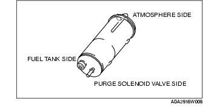

Charcoal canister inspection [ZY]
1. Remove the charcoal canister. (See CHARCOAL CANISTER REMOVAL/INSTALLATION [ZY].)
2. Plug the charcoal canister atmosphere side and purge solenoid valve side.

3. Inspect for air leakage when blowing air by mouth from the fuel tank side.